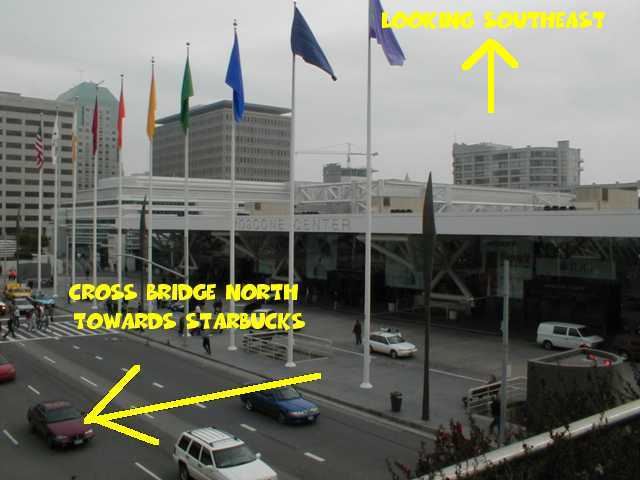

MacWorld Expo 2004 Meeting Notice
2003 MUG highlights
Dick, Mike, Tracy, Alex, and Greg attended MWSF 2003
Mathworks made MacOS X a primary platform for their Matlab/Simulink engineering computing environment; Mac-specific technical support was provided regarding installation and licensing. Alex was able to install Matlab on his G3 iBook and checked out a (time-limited) license. Macs can now be used for actual engineering technical work now that companies are taking advantage of the Unix environment to port their software.
The ASACMUG Mailing list was moved to a new home at Yahoo! Groups. Members can now post messages and hold discussions.
Apple announced the G5 PowerMac in June. The Torrance Art Department received a single-CPU 1.8GHz Mac in October. Tesh successfully created the Torrance Engineering Town Hall movie in record time (Final Cut Express render time went from 4+ hours to less than 10 minutes).
The stability and robustness of MacOS X was demonstrated when the entire Art Department was upgraded to Panther (10.3) within a month of the October 24th release date.
The second annual MacFair was held in Cerritos College in November. Mike, Alex, and Ming attended the event.
Happy Holidays to all,
Alex
The Meeting
As usual, we will be having our regular lunch/dinner get-togethers at Macworld. The meetings will occur during all days of this years' show.>>>NOTE:The meeting location has changed <<< At the bottom is an ASCII rendition of the meeting place for MacWorld Expo. We will meet at the Starbucks cafe above North Moscone Hall at the Yerba Buena Gardens. As you exit North Moscone (facing south), head to your right, go up the stairs. Starbucks should be on your right at the top of the stairs
The pictures below should help you get your bearings:
The meeting times are
* January 6, 2004 between 1:00- 1:15pm
* January 7, 2004 between 1:00- 1:15pm
* January 8, 2004 between 1:00- 1:15pm
* January 9, 2004 between 12:00-12:15pm
If you get lost, give ASACMUG a call:
Alex Morando 909-262-3692
Mike Quan 310-463-2708
